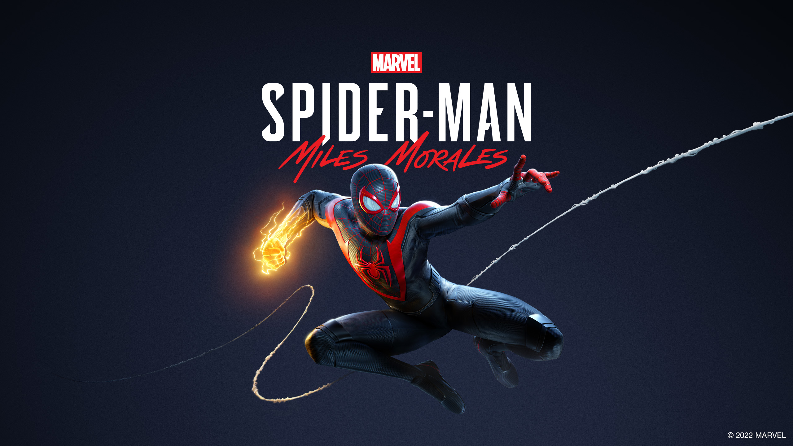
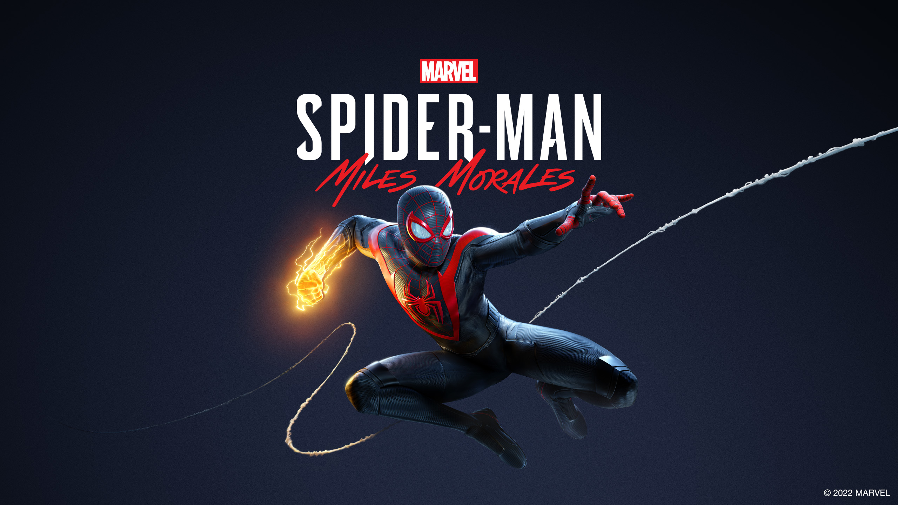

|
 |
|
Emulation games allow modern devices to run software from
older gaming consoles by mimicking their hardware through software known as
emulators. The history of game emulation began in the 1990s with early tools like
NESticle for NES and ZSNES for SNES, created by hobbyists aiming to preserve and
enjoy retro games. As PC and mobile technology advanced, emulators for consoles like
PlayStation, Nintendo 64, Game Boy, and later the PSP and Nintendo DS became
widespread. By the 2010s, mobile emulation surged in popularity, with apps like
PPSSPP and DraStic offering smooth gameplay on smartphones. Today, powerful
emulators like RPCS3 (for PS3) and Yuzu (for Switch) can even run modern games.
While emulators themselves are legal, using ROMs without owning the original games
raises legal issues. Despite this, emulation remains essential for preserving gaming
history, improving accessibility, and enhancing games with features like better
graphics, cheats, and save states. Emulation has also become increasingly recognized
by the gaming industry. Companies like Nintendo, Sony, and Microsoft have started
using emulation to offer classic titles on modern platforms—such as Nintendo Switch
Online’s library of NES, SNES, and Game Boy games, or PlayStation’s support for
older titles via backward compatibility. These official emulators provide legal ways
for newer generations to experience classic games, though often with limited
libraries compared to what fan-made emulators offer.
Beyond nostalgia, emulation plays a crucial role in game preservation. Many older
titles were released on cartridges or discs that degrade over time, and some games
have become nearly impossible to find. Emulators help keep these games alive,
allowing historians, developers, and fans to study and enjoy them. Additionally,
emulators often include modern enhancements like high-definition rendering, save
states, and mod support, making the gaming experience even better than the original
in many cases. Despite ongoing debates about legality, emulation has firmly
established itself as a valuable tool for both retro gaming and digital
preservation.
|


 
